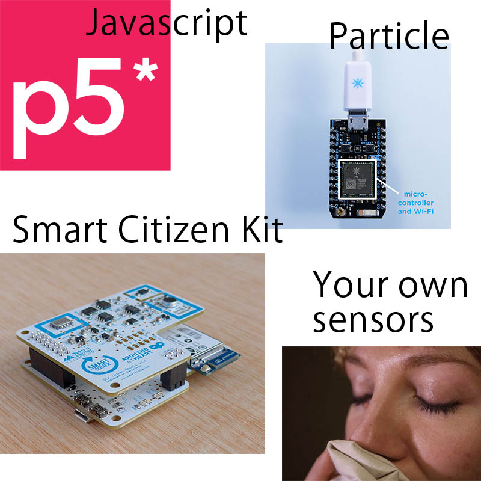

Welcome
Eccentric interfaces, environmental interventions.
A design studio on environmental sense and sensibilies.
How do we move
beyond the anthropocentric worldview of the twentieth century?
We will be making creative works that explore our interconnectedness with natural systems and other lifeforms.
We will be attending to interfaces that mediate our interactions with environmental systems and other lifeforms.
Check it out, they are everywhere!
We will follow
Ursula Franklin and approach technologies as
sets of practices.
"Technology is not the sum of the artifacts, of the wheels and gears, of the rails and electronic transmitters
Technology is a system. It entails far more than its individual material components.
Technology involves organization, procedures, symbols, new words, equations, and,
most of all, a mindset." - Ursula Franklin

Website // Schedule // Repository // Studio expectations
Introductions
Questions